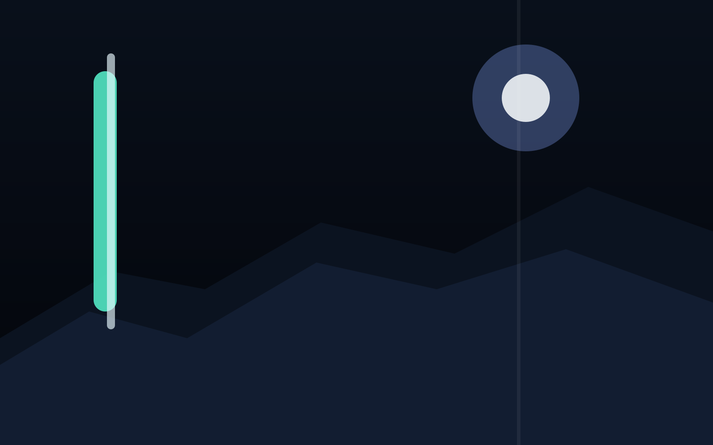
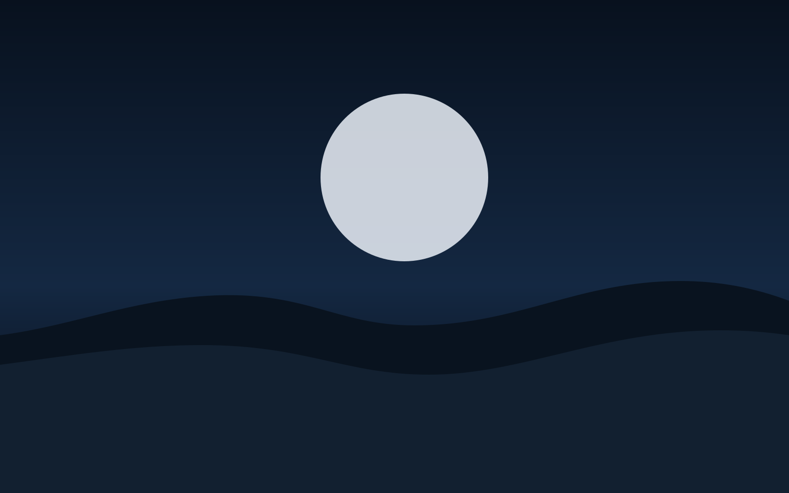
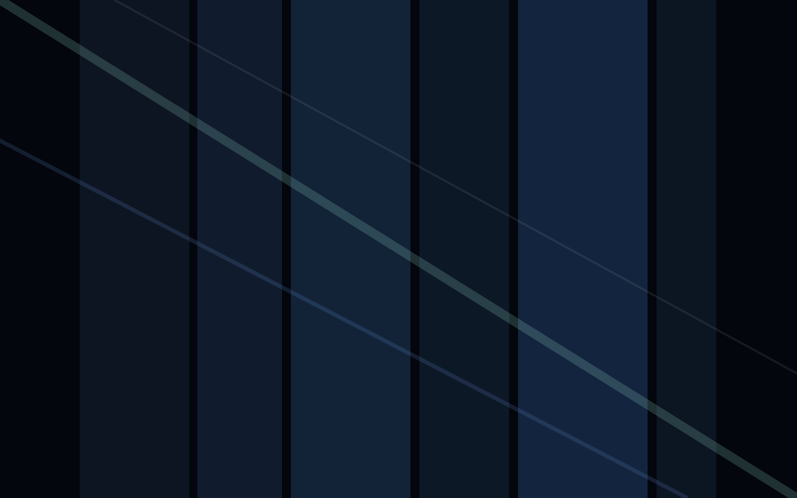
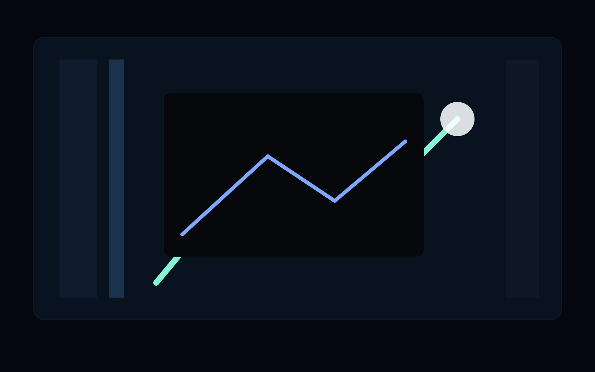
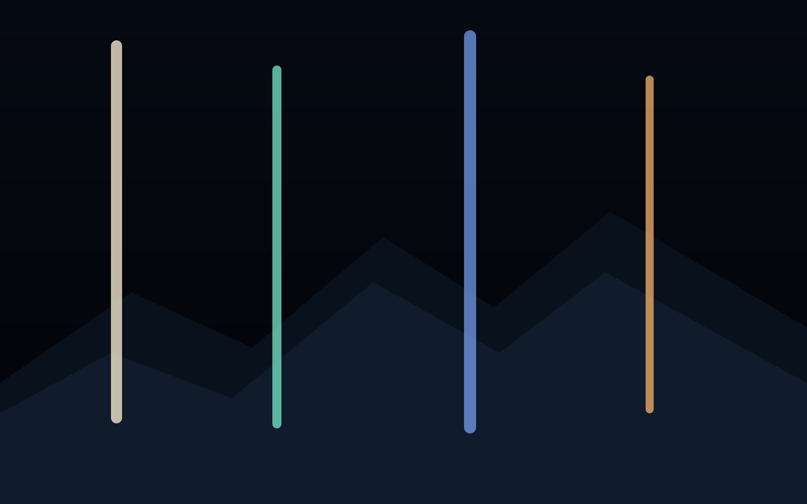
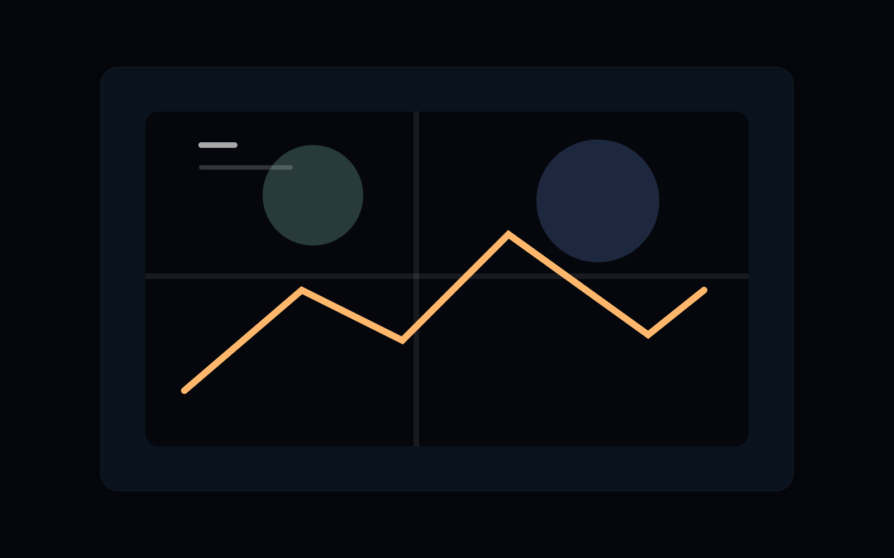

Focus Biome
Frontend, web interaction, creative identity, and turning ideas into playable interfaces.
[spawn_point]
Chang (Sans) Xu
我是 Chang (Sans) Xu，一个向上的人。 我喜欢把技术、想法、表达和视觉体验像方块一样一层层搭起来，让每次迭代都能看见新的地形、结构和可能性。
[profile_data]
我在持续探索如何把代码、审美和表达组合成一个完整而有秩序的世界。 我希望自己的成长不是抽象口号，而是一次次发布、一次次优化、一次次把想法变成可访问页面之后留下来的真实地图。
Frontend, web interaction, creative identity, and turning ideas into playable interfaces.
Keep building in public, keep refining design systems, and keep shipping polished web experiences.
Upward, structured, expressive, and a little bit obsessive about how things feel on screen.
[achievement_book]
Started building public-facing projects and personal web spaces.
Turned ideas into real interfaces with structure, polish, and deployable code.
Connected GitHub updates to the site so the build log keeps changing with the codebase.
Still in progress. The next biome is bigger, stranger, and more ambitious.
[build_log]
Loading recent repositories...
[gallery_biome]
摄影是我平时会反复回去练习的一件事。这里是一个双轨滚动的像素展厅，后面你可以直接把这些占位图换成自己的真实作品。






[signal_tower]
如果你想聊项目、合作、设计、开发，或者只是想打个招呼，可以直接从下面这些入口找到我。